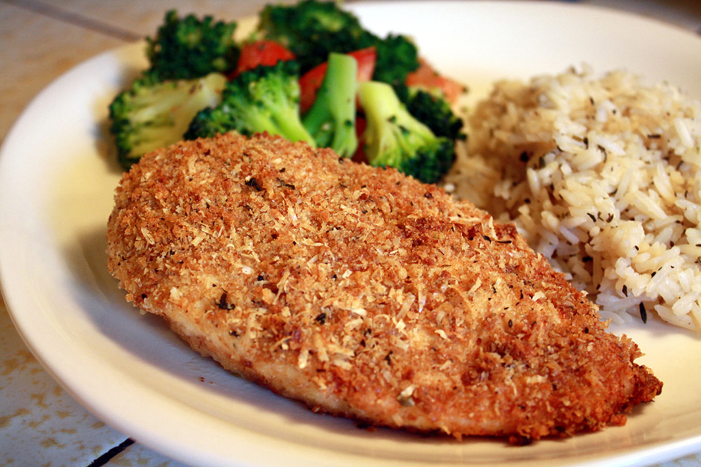

Lasagna

Description
This delicious simple chicken recipe will knock your socks off!
Ingredients
- 1.5 lbs skinless, boneless chicken breast
- 0.25 cup butter
- 6 cloves crushed garlic
- 2 cups seasoned dry bread crumbs
Steps
- Preheat oven to 375 degrees F (190 degrees C).
- In a small saucepan melt butter/margarine with garlic. Dip chicken pieces in butter/garlic sauce, letting extra drip off, then coat completely with bread crumbs.
- Place coated chicken in a lightly greased 9x13 inch baking dish. Combine any leftover butter/garlic sauce with bread crumbs and spoon mixture over chicken pieces. Bake in the preheated oven for 45 minutes to 1 hour.